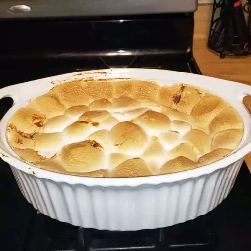

Description
This sweet potato casserole with marshmallows toes the line between side dish and dessert — and we wouldn't have it any other way. Pureed sweet potatoes are blended with sugar and spices, then topped with marshmallows and baked to sweet, gooey perfection.
Ingredients
- 5 sweet potatos, peeled and sliced
- 1/2 cup packed brown Sugar
- 1/4 butter
- 3 tablespoons orange Juice
- 1 pinch ground cinnamon
- 10.5 ounce miniature marshmallows
Steps
- Preheat the oven to 350 degrees F (175 degrees C).
- Place sweet potatoes in a large saucepan with enough water to cover. Bring to a boil and cook until tender, about 15 minutes. Remove from the heat, drain, and mash.
- Place mashed sweet potatoes in a large bowl. Add brown sugar, margarine, orange juice, and cinnamon; mix with an electric mixer until blended. Spread evenly into a 9x13-inch baking dish. Sprinkle marshmallows over top.
- Bake in the preheated oven until casserole is heated through and marshmallows are puffed and golden brown, 25 to 30 minutes.